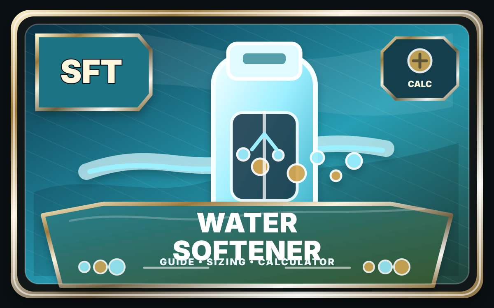

Guide + CalcWater Research & Tech
Everything water in one place — whole-house softeners, reverse osmosis, WQA 2026 convention research, and NSF/ANSI drinking-water standards.
Everything water in one place — whole-house softeners, reverse osmosis, WQA 2026 convention research, and NSF/ANSI drinking-water standards.